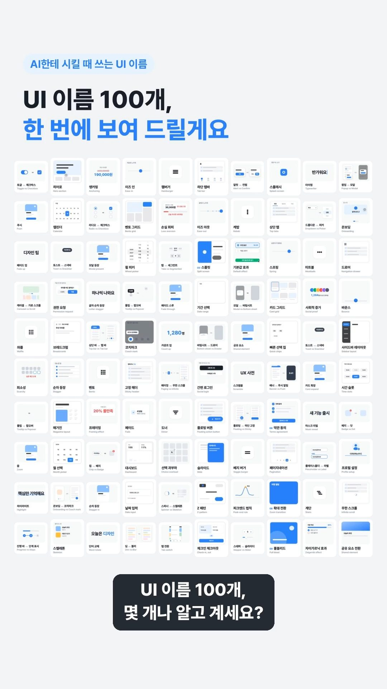

테크 · 릴스 · 2026-11-22
AI에게 화면을 요청할 때 쓰는 UI 이름 100개
토글·체크박스, 팝업·모달처럼 자주 쓰지만 이름을 몰랐던 UI 요소 100개를 모아, AI에게 화면을 요청할 때 정확한 이름으로 말하도록 돕는 자료다.

- 작성자가 하나씩 모아 온 UI 요소 이름 100개를 한 장에 정리했다.
- 토글과 체크박스, 팝업과 모달처럼 매일 누르면서도 이름은 몰랐던 요소들이 포함되어 있다.
- AI에게 화면을 시킬 때 이 이름으로 말하면 원하는 화면에 훨씬 가깝게 나온다고 한다.
- 이미지에는 햄버거, 케밥, 미트볼, 스켈레톤, 바텀시트, 토스트 vs 스낵바 등 다양한 UI 이름이 담겨 있다.
- 전체 내용을 모아 둔 사전은 작성자의 프로필 링크에서 받을 수 있다.